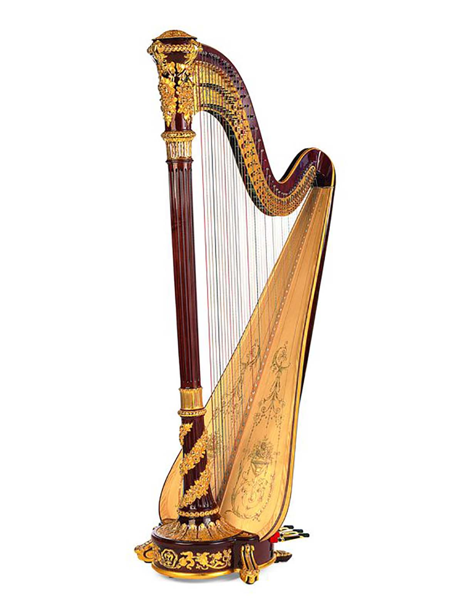
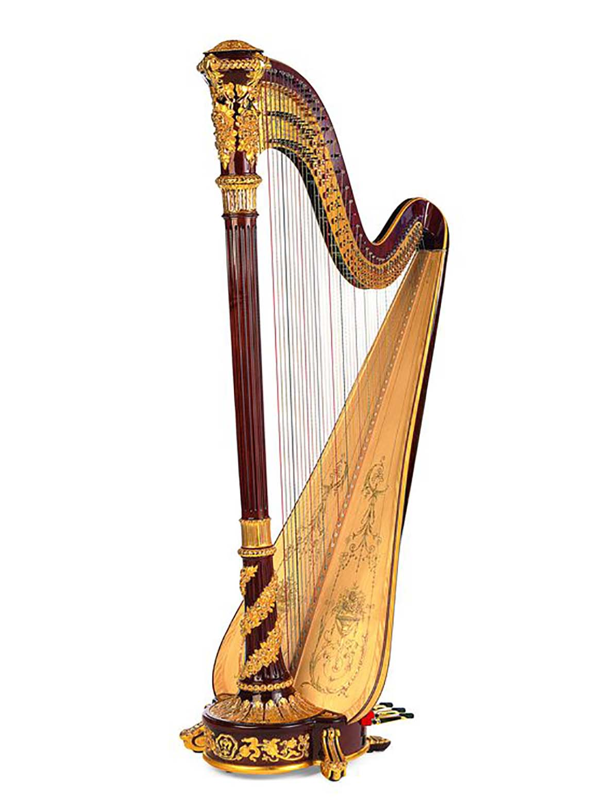

Who are we?
Red'monica Philharmonica is a world-renowned orchestra dedicated to delivering the best shows and presenting the finest music to audiences around the globe. With a rich history spanning decades, Red'monica has established itself as a symbol of excellence in the world of classical music. Their performances captivate audiences with breathtaking musical performances, showcasing the immense talent and dedication of their musicians. From awe-inspiring symphonies to mesmerizing solo performances, Red'monica consistently exceeds expectations and leaves a lasting impression on all who have the privilege of experiencing their concerts. With their unwavering commitment to musical excellence, Red'monica continues to inspire and enchant music lovers with their unparalleled artistry and passion for the timeless beauty of classical music.
When did we started?
In a small town nestled amidst rolling hills, Red'monica Philharmonica was formed by a group of passionate musicians with a shared vision. They embarked on a remarkable journey, fueled by their love for music and an unwavering determination to create something extraordinary. Despite facing initial challenges, such as securing funding and finding suitable rehearsal spaces, their spirits remained undaunted.
As word spread about their talent and dedication, Red'monica began to attract more musicians who shared their passion. Their numbers grew, and with each new addition, the orchestra's ambitions soared higher. They took their captivating performances beyond local community halls, expanding their reach to neighboring towns and enchanting audiences with the sheer beauty and emotion of their music.
The reputation of Red'monica Philharmonica began to flourish, drawing the attention of renowned conductors and virtuoso soloists. Their dedication and commitment to musical excellence caught the eye of generous patrons and music enthusiasts, who rallied behind the orchestra. With their support, Red'monica secured the necessary funds to construct a magnificent concert hall, a testament to their growing legacy.
Equipped with a state-of-the-art venue and an ever-growing pool of exceptional musicians, Red'monica embarked on a new chapter in their evolution. Their grand symphonic concerts attracted audiences from far and wide, leaving a lasting impression on all who had the privilege of experiencing their performances. Critics hailed them as a symbol of musical brilliance, and their reputation as a world-renowned orchestra was firmly established.
Today, Red'monica Philharmonica stands as a beacon of artistic excellence, captivating audiences worldwide with their unparalleled artistry and passion for classical music. They continue to push boundaries, embracing a diverse repertoire that spans centuries of musical compositions. The orchestra's legacy lives on, inspiring new generations of musicians and reminding the world of the timeless beauty and emotional power of classical music.
Our Musicians
- Clara Rodriguez (Violinist)
- Alexander Wagner (Cellist)
- Sophia Anderson (Flutist)
- Isabella Sanchez (Harpist)
- Gabriel Martinez (Pianist)
- Olivia Thompson (Clarinetist)
- Emma Wilson (Oboist)
- Daniel Lee (French Horn Player)
- Lucas Park (Trombonist)
- Benjamin Chen (Trumpeter)
Their instruments
- Violinist
- Cellist
- Flutist
- Harpist
- Pianist
- Clarinetist
- Oboist
- French Horn Player
- Trombonist
- Trumpeter
 
